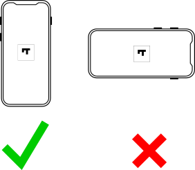
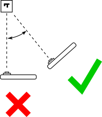
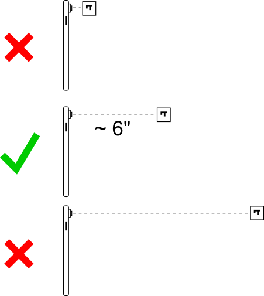
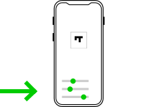

This page describes how to use the augmented reality (AR) tool (app) for this study. Please review these brief instructions then click the link at the bottom of this page to go to the app.
The app uses your camera and motion sensors to deliver an AR experience. You'll need to tap ok a few times to allow access to these resources. No recordings are made or stored. The Chrome browser cannot be used; other browsers like Safari and Firefox should be fine.
The object on the test stand in front of you has a target marker on it that looks like this:

While using the app, keep your phone in portrait mode and point your camera at the marker:

Try to keep your camera at a slight angle instead of pointing directly at the marker:

Start with your camera about 6 inches from the marker then move around as desired:

There will be sliders to adjust transparency at the bottom of the app:

When you're ready, click the button below to go to the app. Remember: it will ask for permission to access your camera and motion devices.